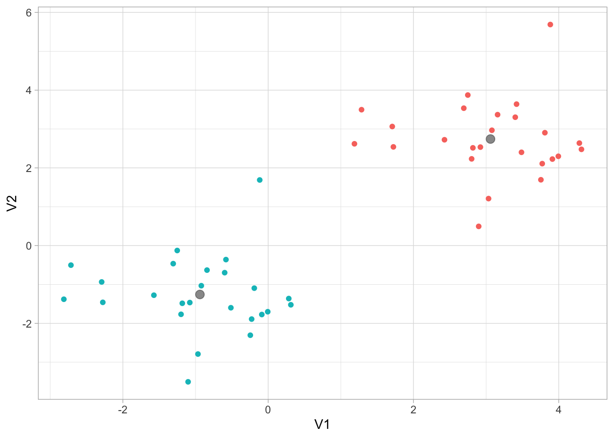
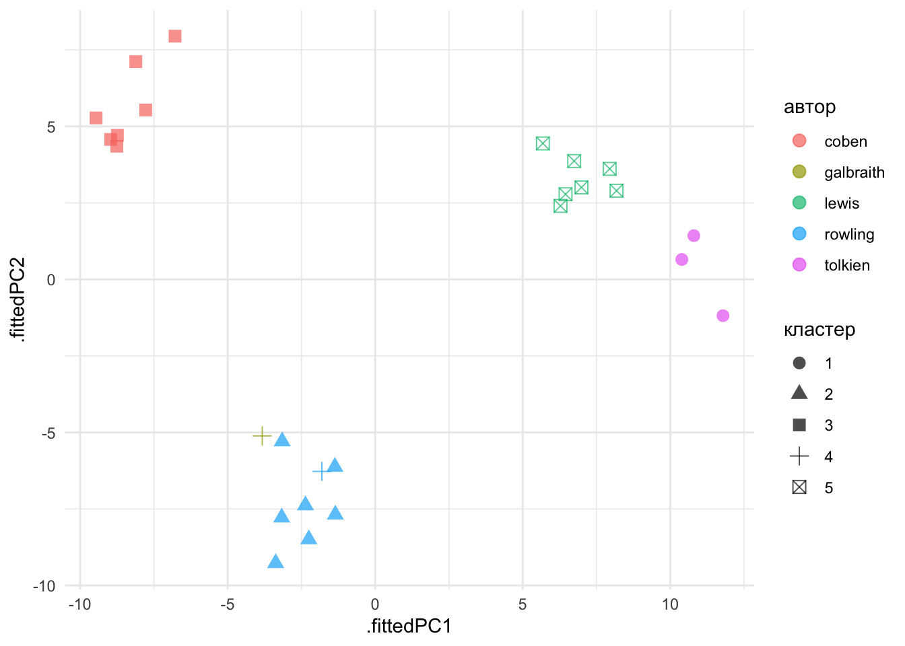
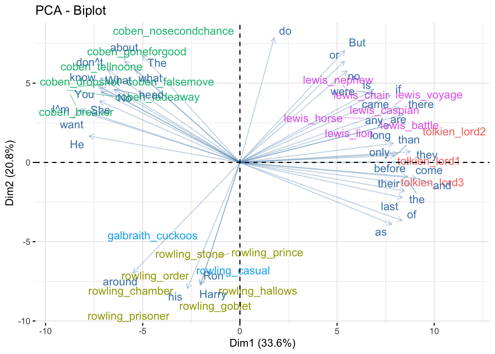
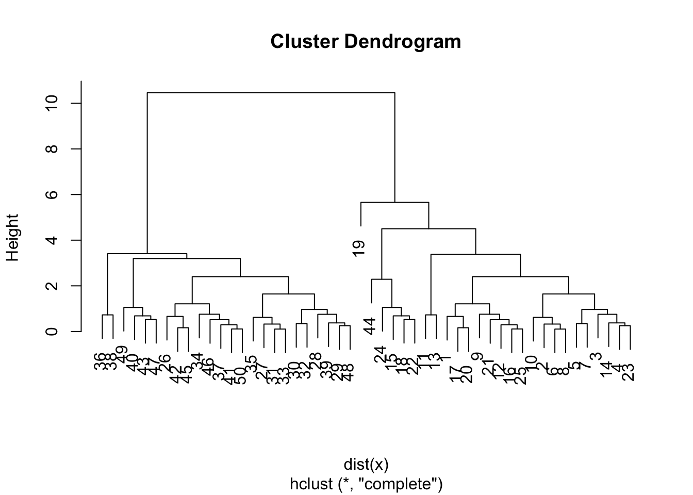
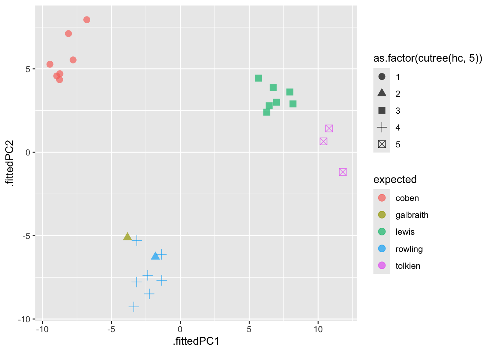

set.seed(07092024)
x = matrix(rnorm(50 * 2), ncol = 2)
x[1:25, 1:2] = x[1:25, 1:2] + 3
x[26:50, 1:2] = x[1:25, 1:2] - 415 Кластеризация и метод главных компонент
15.1 Виды кластерного анализа
Все методы машинного обучения делятся на методы обучения с учителем и методы обучения без учителя. В первом случае у нас есть некоторое количество признаков X, измеренных у n объектов, и некоторый отклик Y. Задача заключается в предсказании Y по X. Например, мы измерили вес и пушистость у сотни котов известных пород, и хотим предсказать породу других котов, зная их вес и пушистость.
Обучение без учителя предназначено для случаев, когда у нас есть только некоторый набор признаков X, но нет значения отклика. Например, есть группа котов, для которых мы измерили вес и пушистость, но мы не знаем, на какие породы они делятся.
Кластеризация относится к числу методов для обнаружения неизвестных групп (кластеров) в данных. Точнее, это целый набор методов. Мы рассмотрим два из них:
- кластеризация по методу K средних
- иерархическая кластеризация
В случае с кластеризацией по методу K средних мы пытаемся разбить наблюдения на некоторое заранее заданное число кластеров. Иерархическая кластеризация возвращает результат в виде дерева (дендрограммы), которая позволяет увидеть все возможные кластеры.
15.2 Кластеризация по методу K средних
Алгоритм кластеризации:
- Каждому наблюдению присваивается случайно выбранное число из интервала от 1 до K (число кластеров). Это исходные метки.

Вычисляется центроид для каждого из кластеров. Центроид k-го класса – вектор из p средних значений признаков, описывающих наблюдения из этого кластера.
Каждому наблюдению присваивается метка того кластера, чей центроид находится ближе всего к этому наблюдению (удаленность выражается обычно в виде евклидова расстояния).
Шаги 2-3 до тех пор, пока метки классов не станут изменяться.
Это дает возможность минимизировать внутрикластерный разброс: хорошей считается такая кластеризация, при которой такой разброс минимален.
Когда центроиды двигаются, кластеры приобретают и теряют документы.

Внутрикластерный разброс в кластере k – это сумма квадратов евклидовых расстояний между всеми парами наблюдений в этом кластере, разделенная на общее число входящих в него наблюдений.
15.2.1 K-means в R
Рассмотрим это сначала на симулированных, а затем на реальных данных.
km.out <- kmeans(x, centers = 2, nstart = 20)
km.out$cluster [1] 1 1 1 1 1 1 1 1 1 1 1 1 1 1 1 1 1 1 1 1 1 1 1 1 1 2 2 2 2 2 2 2 2 2 2 2 2 2
[39] 2 2 2 2 2 2 2 2 2 2 2 2Наблюдения разделились идеально. Вот так выглядят наши центроиды:
library(tidyverse)
as_tibble(x) |>
ggplot(aes(V1, V2, color = as.factor(km.out$cluster))) +
geom_point(show.legend = F) +
geom_point(data = as.data.frame(km.out$centers), color = "grey40", size = 3, alpha = 0.7) +
theme_light()
Аргумент nstart позволяет запустить алгоритм функции несколько раз с разными начальными метками кластеров; функция вернет наилучший результат.
15.2.2 Кластеризация текстов
Я воспользуюсь датасетом из пакета stylo, в котором хранятся частотности 3000 наиболее частотных слов для 26 книг 5 авторов. Один из этих авторов – таинственный Роберт Гэлбрейт, как выяснилось – псевдоним Джоан Роулинг.
library(stylo)
data("galbraith")
galbraith <- as.data.frame.matrix(galbraith) |>
select(1:150)
galbraith[1:10, 1:10]Если одни признаки имеют больший разброс значений, чем другие, то при вычислении расстояний будут преобладать элементы с более широкими диапазонами. Поэтому перед применением алгоритма в некоторых случаях рекомендуется нормализовать данные по Z-оценке: из значения признака Х вычитается среднее арифметическое, а результат разделить на стандартное отклонение Х. Это делает функция scale().
\[ X_{new} = \frac{X - Mean(X)}{StDev(X)}\]
set.seed(07092024)
km.out <- kmeans(scale(galbraith), centers = 5, nstart = 20)
km.out$cluster coben_breaker coben_dropshot coben_fadeaway
3 3 3
coben_falsemove coben_goneforgood coben_nosecondchance
3 3 3
coben_tellnoone galbraith_cuckoos lewis_battle
3 4 5
lewis_caspian lewis_chair lewis_horse
5 5 5
lewis_lion lewis_nephew lewis_voyage
5 5 5
rowling_casual rowling_chamber rowling_goblet
4 2 2
rowling_hallows rowling_order rowling_prince
2 2 2
rowling_prisoner rowling_stone tolkien_lord1
2 2 1
tolkien_lord2 tolkien_lord3
1 1 expected <- str_remove_all(names(km.out$cluster), "_.*")
tibble(expected = expected,
predicted = km.out$cluster) |>
group_by(expected) |>
count(predicted)Почти все авторы разошлись по разным кластерам (кроме Роулинг), при этом Гэлбрейт в одном кластере с Роулинг. Результат кластеризации по методу k-средних можно визуализировать в двумерном пространстве, прибегнув к методу главных компонент.
15.3 Метод главных компонент
15.3.1 PCA: общий смысл
Метод главных компонент (англ. principal component analysis, PCA) — один из основных способов уменьшить размерность данных, потеряв наименьшее количество информации. Этот метод привлекается, в частности, когда надо визуализировать многомерные данные.
Общий принцип хорошо объясняет Гаральд Баайен (Baayen 2008, 119).
Серый цвет верхнего левого куба означает, что точки распределены равномерно – нужны все три измерения для того, чтобы описать положение точки в кубе. Куб справа сверху по-прежнему имеет три измерения, но нам достаточно только двух, вдоль которых рассеяны данные. Куб слева снизу тоже имеет два измерения, но вдоль оси y разброс данных меньше, чем вдоль x. Наконец, для куба справа снизу достаточно только одного измерения.
Метод главных компонент ищет такие измерения, вдоль которых наблюдается наибольший разброс данных, причем каждая следующая компонента будет объяснять меньше разброса.
15.3.2 PCA в базовом R
pca_fit <- prcomp(galbraith, scale = T, center = T)
names(pca_fit)[1] "sdev" "rotation" "center" "scale" "x" Первый элемент хранит данные о стандартном отклонении, соответствующем каждой компоненте.
round(pca_fit$sdev, 3) [1] 7.100 5.586 4.055 3.147 2.891 2.318 1.799 1.720 1.691 1.653 1.385 1.345
[13] 1.293 1.259 1.230 1.137 1.074 1.034 0.927 0.904 0.833 0.812 0.753 0.738
[25] 0.612 0.000Это можно узнать также, вызвав функцию summary.
summary(pca_fit)Importance of components:
PC1 PC2 PC3 PC4 PC5 PC6 PC7
Standard deviation 7.1000 5.5857 4.0551 3.14673 2.89110 2.31817 1.79909
Proportion of Variance 0.3361 0.2080 0.1096 0.06601 0.05572 0.03583 0.02158
Cumulative Proportion 0.3361 0.5441 0.6537 0.71971 0.77543 0.81126 0.83283
PC8 PC9 PC10 PC11 PC12 PC13 PC14
Standard deviation 1.71973 1.69124 1.65255 1.38483 1.34501 1.29297 1.25850
Proportion of Variance 0.01972 0.01907 0.01821 0.01279 0.01206 0.01115 0.01056
Cumulative Proportion 0.85255 0.87162 0.88983 0.90261 0.91467 0.92582 0.93637
PC15 PC16 PC17 PC18 PC19 PC20 PC21
Standard deviation 1.22957 1.13749 1.07351 1.03397 0.92701 0.90422 0.83317
Proportion of Variance 0.01008 0.00863 0.00768 0.00713 0.00573 0.00545 0.00463
Cumulative Proportion 0.94645 0.95508 0.96276 0.96989 0.97562 0.98107 0.98570
PC22 PC23 PC24 PC25 PC26
Standard deviation 0.8121 0.75291 0.73778 0.6122 6.838e-15
Proportion of Variance 0.0044 0.00378 0.00363 0.0025 0.000e+00
Cumulative Proportion 0.9901 0.99387 0.99750 1.0000 1.000e+00Таким образом, первые две компоненты объясняют почти половину дисперсии, а последняя почти не имеет объяснительной ценности.
plot(pca_fit)Координаты текстов в новом двумерном пространстве, определяемом первыми двумя компонентами, хранятся в элементе под названием x.
pca_fit$x[,1:2] PC1 PC2
coben_breaker -8.757336 4.352396
coben_dropshot -9.459904 5.276560
coben_fadeaway -8.964170 4.572739
coben_falsemove -8.738214 4.707646
coben_goneforgood -8.113474 7.115332
coben_nosecondchance -6.783907 7.946904
coben_tellnoone -7.779098 5.535273
galbraith_cuckoos -3.828020 -5.113776
lewis_battle 8.179671 2.898561
lewis_caspian 6.991680 3.005847
lewis_chair 6.743976 3.867256
lewis_horse 6.451278 2.783159
lewis_lion 6.281176 2.401030
lewis_nephew 5.682845 4.443366
lewis_voyage 7.947284 3.612055
rowling_casual -1.807538 -6.273038
rowling_chamber -3.168879 -7.780693
rowling_goblet -2.249544 -8.491719
rowling_hallows -1.350855 -7.684606
rowling_order -2.364382 -7.381456
rowling_prince -1.366061 -6.124957
rowling_prisoner -3.373330 -9.270778
rowling_stone -3.152846 -5.291951
tolkien_lord1 10.392543 0.650889
tolkien_lord2 10.799804 1.429537
tolkien_lord3 11.787300 -1.18557715.3.3 PCA и кластеры K-means
Функция augment() из пакета broom позволяет соединить результат анализа с исходными данными.
library(broom)
pca_fit |>
augment(galbraith) |>
mutate(expected = str_remove_all(.rownames, "_.+")) |>
ggplot(aes(.fittedPC1, .fittedPC2,
color = expected,
shape = as.factor(km.out$cluster))) +
geom_point(size = 3, alpha = 0.7) +
scale_color_discrete(name = "автор") +
scale_shape_discrete(name = "кластер") +
theme_minimal()
Еще один способ представить наблюдения.
# install.packages("FactoMineR")
# install.packages("factoextra")
library(FactoMineR)
library(factoextra)
fviz_pca_ind(pca_fit, geom = c("text"),
habillage = as.factor(km.out$cluster),
addEllipses = TRUE) +
theme(legend.position = "none")Аналогично можно представить и нагрузки компонент.
fviz_pca_var(pca_fit, col.var="contrib",
select.var = list(contrib = 40),
repel = TRUE)+
theme_minimal() +
theme(legend.position = "none")При интерпретации этого графика следует учитывать, что положительно коррелированные переменные находятся рядом, а отрицательно коррелированные переменные находятся в противоположных квадрантах. Например, для первого измерения “his” и “as” коррелированы отрицательно. Это можно проверить, достав матрицу c нагрузками компонент из объекта pca_fit (в качестве координат используются коэффициенты корреляции между переменными и компонентами):
pca_fit$rotation[c("his", "as"),1:2] PC1 PC2
his -0.04033987 -0.15077917
as 0.11665675 -0.07410514Теперь - наблюдения и переменные на одном графике.
fviz_pca_biplot(pca_fit, geom = c("text"),
select.var = list(cos2 = 40),
habillage = as.factor(km.out$cluster),
col.var = "steelblue",
alpha.var = 0.3,
repel = TRUE,
ggtheme = theme_minimal()) +
theme(legend.position = "none")
Поработать над оформлением такого графика вы сможете в домашнем задании.
15.4 Иерархическая кластеризация
15.4.1 Интерпретация дендрограммы
Одним из недостатков кластеризации по методу k-средних является то, что она требует предварительно указать число кластеров. Этого недостатка лишена иерархическая кластеризация. Если такая кластеризация происходит “снизу вверх”, она называется агломеративной. При этом построение дендрограммы начинается с “листьев” и продолжается вплоть до самого “ствола”.
При интерпретации дерева надо иметь в виду, что существует \(2^{n-1}\) способов упорядочения ветвей дендрограммы, где n – это число листьев. В каждой из точек слияния можно поменять местами наблюдения, не изменяя смысла дендрограммы. Поэтому выводы о сходстве двух наблюдений нельзя делать на основе из близости по горизонтальной оси. См. рис. из книги (Г. Джеймс, Д. Уиттон, Т. Хасти, Р. Тибришани 2017, 423)). На рисунке видно, что наблюдение 9 похоже на наблюдение 2 не больше, чем оно похоже на наблюдения 8, 5 и 7. Выводы делаются, исходя из положения на вертикальной оси той точки, где происходит слияние наблюдений.
Количество кластеров определяется высотой, на которой мы разрезаем дендрограмму. Из этого следует, что одну и ту же дендрограмму можно использовать для получения разного числа кластеров.
15.4.2 Алгоритм кластеризации
Вычислить меру различия для всех пар наблюдений. На первом шаге все наблюдения рассматриваются как отдельный кластер.
Найти пару наиболее похожих кластеров и объединить их. Различие между кластерами соответствует высоте, на которой происходит их слияние в дендрограмме.
Повторить шаги 1-2, пока не останется 1 кластер.

15.4.3 Тип присоединения
Вид дерева будет зависеть от типа присоединения. На рисунке ниже представлено три способа: полное, одиночное, среднее.

Обычно предпочитают среднее и полное, т.к. они приводят к более сбалансированным дендрограммам.
Для функции hclust() в R по умолчанию выставлено значение аргумента method = "complete".
15.4.4 Иерархическая кластеризация в R
Применим алгоритм к симулированным данным, которые мы создали выше. Функция dist() по умолчанию считает евклидово расстояние.
hc.complete <- hclust(dist(x), method = "complete")
plot(hc.complete)
На картинке видно, что наблюдения из верхих и нижних рядов расходятся на два больших кластера.
15.4.5 Иерархическая кластеризация текстов
Для вычисления расстояния между текстами лучше подойдет не евклидово, а косинусное расстояние на нормализованных данных. В базовой dist() его нет, поэтому воспользуемся пакетом philentropy.
dist_mx <- galbraith |>
scale() |>
philentropy::distance(method = "cosine", use.row.names = T) Metric: 'cosine'; comparing: 26 vectors.Преобразуем меру сходства в меру расстояния и передадим на кластеризацию.
dist_mx <- as.dist(1 - dist_mx)
hc <- hclust(dist_mx)
plot(hc)Для получения меток кластеров, возникающих в результате рассечения дендрограммы на той или иной высоте, можно воспользоваться функцией cutree().
cutree(hc, 5) coben_breaker coben_dropshot coben_fadeaway
1 1 1
coben_falsemove coben_goneforgood coben_nosecondchance
1 1 1
coben_tellnoone galbraith_cuckoos lewis_battle
1 2 3
lewis_caspian lewis_chair lewis_horse
3 3 3
lewis_lion lewis_nephew lewis_voyage
3 3 3
rowling_casual rowling_chamber rowling_goblet
2 4 4
rowling_hallows rowling_order rowling_prince
4 4 4
rowling_prisoner rowling_stone tolkien_lord1
4 4 5
tolkien_lord2 tolkien_lord3
5 5 Этим меткам можно назначить свой цвет.
library(dendextend)
hcd <- as.dendrogram(hc)
par(mar=c(2,2,2,7))
hcd |>
set("branches_k_color", k = 5) |>
set("labels_col", k=5) |>
plot(horiz = TRUE)
abline(v=0.8, col="pink4",lty=2)15.4.6 PCA и иерархическая кластеризация
Код почти как выше, но надо указать, на сколько кластеров мы разрезаем дерево.
pca_fit |>
augment(galbraith) |>
ggplot(aes(.fittedPC1, .fittedPC2,
color = expected, shape = as.factor(cutree(hc, 5)))) +
geom_point(size = 3, alpha = 0.7)
15.5 Многомерное шкалирование
Кроме этого, для визуализации многомерных данных применяют многомерное шкалирование (cmd = classical multidimensional scaling). Функция получает на входе матрицу расстояний.
cmd_fit <- cmdscale(dist_mx) |>
as_tibble()
cmd_fitcmd_fit |>
ggplot(aes(V1, V2,
color = expected,
shape = as.factor(cutree(hc, 5)))) +
geom_point(size = 3, alpha = 0.7)Многомерное шкалирование стремится отразить расстояния между наблюдениями.